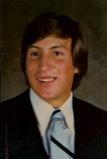
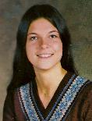
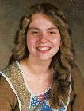

| Dedicated to the members of our group who have gone on.
Roger Loren Hulse
Longtime Alaska and Juneau resident Roger Loren Hulse died of natural causes on Dec. 29, 2008. He was 49. Born
on Nov. 23, 1959, to Virgil and Phyllis Hulse, who were formerly of
Juneau and now live in Las Vegas, he spent most of his life in Juneau. A former city of Juneau employee with the wastewater
treatment plant, he was most recently employed as project manager with
the Metlakatla Housing Authority. According to his family, he was an avid hunter and fisherman
who enjoyed the outdoors and sea. Friends and peers respected his
carpentry skills. He was considered a craftsman. Being a grandfather
was a major enjoyment of his life. He is survived by his wife, Linda Hulse, of Juneau;
daughters, Mariah Underwood and husband, Steve, of Juneau, Kayla
Whitworth, of Juneau, and Alicia Cox, of Juneau; son, Nicholas Dehart,
of Juneau; sister, Becky Shields and husband, Robert, of California;
brothers, Rod Hulse, of Las Vegas, Bob Hulse and wife, Rorie, of
Metlakatla, Randy Hulse and wife, Linda, of Juneau, and Tim Hulse and
wife, Carie, of Juneau; grandchildren, Kimberly Whitworth, Brett
Underwood and Dawson Underwood, all of Juneau; and numerous nieces and
nephews. A celebration of his life is planned for this summer. In
lieu of flowers, the family asked that contributions may be made to the
charity of your choice. Troy Kahklen 
Longtime Juneau resident Troy Kahklen died Feb. 25, 2008, at Johns Hopkins Hospital in Baltimore, Md., after a kidney transplant and a five-month battle for a better quality of life. He was 47. Born in Flagstaff, Ariz., he was a kid at heart, his family said. He sustained his youthful spirit by spending time with his son, Kyle, they added. He also loved spending time with his nephews and nieces, Michael, Anna, Amber and Abbiegail Kahklen, Oscar and Sydney Jones and Claire Homan, all of Juneau. According to his family, he enjoyed playing baseball, softball and ultimate Frisbee, and he looked forward to his annual gold trip with his son and friends. He was obsessive about fishing and could always be found flipping burgers at his mother's house on the Fourth of July, they said.
He will be remembered by friends and family for his "exceptional cliff jumping, sled fighting, water ballooning, Alaskaball and daredevil chainless Spider bike-riding skills," his family said.
He is survived by his son, Kyle Kahklen; mother, Abbie Kahklen; father, Joseph Kahklen; brothers and sisters, Keith Kahklen and his wife, Lecia, and Craig Kahklen and his wife, Heather, all of Juneau; and sister, Cheryl Klein, of New York.
A memorial service was held at 2 p.m. Saturday, March 1, at Northern Light United Church. A reception followed at the Alaska Native Brotherhood Hall. The family requests no donations, due to the generosity already shown to him and his family during this time. Cards and well wishes can be sent to P.O. Box 240344, Douglas, AK 99824.
Catherine Roberts Miller  Former Juneau resident Catherine Roberts Miller, 44, died Aug. 29, 2004, at her home in Maui following a six-month experience with cancer. She was born on Father's Day, June 19, 1960, in Anchorage to Sue and Don Roberts. She was the youngest of their four children. She attended schools in Anchorage, Kodiak and Fairbanks, and graduated from Juneau-Douglas High School in 1978. She moved to Maui three years later to attend Maui Community College, taking advantage of the state's tuition exchange program. She fell in love with the area and made it her home. She worked as a stay-at-home mom, a paralegal, an emergency dispatcher and most recently as an aide at Maui Memorial Hospital. She was deeply involved in her church community at King's Cathedral. She sponsored others through Alcoholics Anonymous and volunteered with Hospice, which assisted her and family in her last months. Her special interests were singing in the church choir and photography.
Her family said she was especially proud of her 14 years of sobriety, and the year she spent working with Marilyn Hickey ministries in Denver in 1999. It brought her to a new level of spiritual growth. They said she loved Maui, cared about the community and wanted to share the gospel.
She is survived by her mother, Sue Roberts of Green Valley, Ariz.; husband, Jim Miller and their son, Aaron, of Maui; former husband, Gerald Stewart, and their two daughters, Angela and Ashley, of Maui; granddaughter, Rileigh, of Maui; sisters, Laury (Bruce) Scandling and Wendy (Steve) Hamilton of Juneau; and brother, Rob (Stephanie) Roberts of Denver.
A service was held Sept. 11 at King's Cathedral in Maui. The family can be reached at 116 Luakaha, Kihei, HI 96753.
Darla Joy Sutton
Former Juneau resident Darla Joy Sutton, 45, died June 18, 2006, in Sitka. She was born Sept. 30, 1960, in Livingston Park, Mont., to L. Dean and
Carolyn Walrath. When she was 7, she moved to Juneau, where her mother
married Norman Hickok. She lived there until moving to Sitka in 1983.
Shortly afterward, she met the love of her life, Jerry Sutton. They
were married Nov. 26, 1991. The two enjoyed all the Great Land had to offer, her family said. They
said, "She found the fun in every adventure and grasped each
opportunity to live life to its fullest. Wit and charm intertwined all
conversations, with a giggle never far off."
"Darla was a devoted and loving wife, mother, daughter and sister, who
had an exuberant flair for life, and will be sorely missed," said
family members. "Her sense of humor, gift of joy, and genuine love for
all living things lent to the happiness she so willingly shared with
everyone."
She was preceded in death by her father. She is survived by her husband; daughter, Tabitha Lou-Alta Sutton and
her son, Trevor John Shakespeare; parents, Norman and Carolyn Hickok,
of Thompson Falls, Mont.; brothers and their families, Rodney and
Sandra Hickok, of Fairbanks, and Kyle Hickok, of Oceanview, Hawaii;
sisters and their families, Yvette and Bill Woodward, of Gillette,
Wyo., Lorraine Hickok, of Portland, Ore., Tami and Greg McKay, of
Sacramento, Calif., Norma Jean Hickok, of Oakland, Calif., and Terri
and David Hunter, of Kodiak; in-laws, Mike and Arlene Sutton and
family, Ressa Sutton, and George and Dawn Bentson, of Florida; and many
friends in Sitka and abroad. Memorial services were on June 26 at Harrigan Centennial Hall in Sitka.
Chaplain Frank Ockert officiated, and a reception followed at the Sitka
Elks Lodge. Condolences can be sent to Jerry, Trevor and Tabitha, P.O. Box 723, Sitka.
Kelly Jean Windom 
Juneau
resident Kelly Jean Windom died April 14, 2008, in Juneau, after
approximately seven years of battling colon cancer. She was 47. Born
in 1960, in Spokane, Wash., she graduated from Juneau-Douglas High
School in 1978. She attended The University of Alaska Southeast and
graduated magna cum laude. At her work, she loved to provide the
children of the community with haunted houses on Halloween, Christmas
parties and various other safe and fun activities throughout the year.
Her family said she also loved to raise funds for the American Cancer
Society's Relay For life. Last year, she helped plan a carnival for
kids and raised hundreds of dollars, they said.
She was preceded in death by her father, Wilford "Buss" Patrick.
She
is survived by her daughters, Candice, Kristina and Colleen Windom, of
Juneau; mother, Norma Patrick, of Juneau; sisters, Deborah Patrick, of
Alburqurqe, N.M., Virgina Waterhouse and her husband, Jason, of Juneau,
Shelly Hohenthaner and her husband, Andy, of Juneau; sister-in-laws,
Monica Mitchell and her husband, Glenn, of Juneau, and Jodie Davis and
her husband, Marcus, of Denver, Colo.; and grandchildren, Reagan and
Sofia Rifanburg, of Juneau.
A celebration of life will be at 3 p.m. Saturday, April 26, at Mountain View Senior Center, 895 West 12th St.
In
lieu of flowers, the family would appreciate donations sent to the
Juneau Douglas American Cancer Society's Relay for Life, 3851 Piper
St., Suite U240, Anchorage, AK 99508.
|